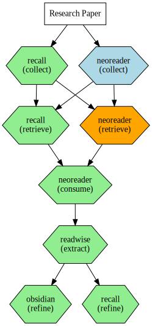

tools_from_code()
informationitems_from_code()Create graphiz visualisation
This module creates the workflow visualisation based on the instances and using the
graphiz module.
Creating some instances for testing
tools_inst = Tool.get_instances()
items_inst = InformationItem.get_instances()tools_inst{'reader': Tool(id=101, name='Reader', organization_system=[<OrganizationSystem.TAGS: 'tags'>], phase_quality=PhaseQualityData(collect=<PhaseQuality.GREAT: 'great'>, retrieve=<PhaseQuality.BAD: 'bad'>, consume=<PhaseQuality.GREAT: 'great'>, extract=<PhaseQuality.NA: 'na'>, refine=<PhaseQuality.NA: 'na'>), collect=None, retrieve=None, consume=None, extract=None, refine=None, slug='reader'),
'recall': Tool(id=102, name='Recall', organization_system=[<OrganizationSystem.LINKS: 'links'>], phase_quality=PhaseQualityData(collect=<PhaseQuality.GREAT: 'great'>, retrieve=<PhaseQuality.GREAT: 'great'>, consume=<PhaseQuality.NA: 'na'>, extract=<PhaseQuality.NA: 'na'>, refine=<PhaseQuality.GREAT: 'great'>), collect=None, retrieve=None, consume=None, extract=None, refine=None, slug='recall'),
'readwise': Tool(id=103, name='Readwise', organization_system=[<OrganizationSystem.TAGS: 'tags'>], phase_quality=PhaseQualityData(collect=<PhaseQuality.NA: 'na'>, retrieve=<PhaseQuality.OK: 'ok'>, consume=<PhaseQuality.NA: 'na'>, extract=<PhaseQuality.GREAT: 'great'>, refine=<PhaseQuality.OK: 'ok'>), collect=None, retrieve=None, consume=None, extract=None, refine=None, slug='readwise'),
'obsidian': Tool(id=104, name='Obsidian', organization_system=[<OrganizationSystem.JOHNNY_DECIMAL: 'johnny_decimal'>, <OrganizationSystem.LINKS: 'links'>], phase_quality=PhaseQualityData(collect=<PhaseQuality.NA: 'na'>, retrieve=<PhaseQuality.OK: 'ok'>, consume=<PhaseQuality.OK: 'ok'>, extract=<PhaseQuality.GREAT: 'great'>, refine=<PhaseQuality.GREAT: 'great'>), collect=None, retrieve=None, consume=None, extract=None, refine=None, slug='obsidian'),
'librarything': Tool(id=105, name='LibraryThing', organization_system=[<OrganizationSystem.TAGS: 'tags'>], phase_quality=PhaseQualityData(collect=<PhaseQuality.OK: 'ok'>, retrieve=<PhaseQuality.BAD: 'bad'>, consume=<PhaseQuality.NA: 'na'>, extract=<PhaseQuality.NA: 'na'>, refine=<PhaseQuality.NA: 'na'>), collect=None, retrieve=None, consume=None, extract=None, refine=None, slug='librarything'),
'snipd': Tool(id=106, name='Snipd', organization_system=[<OrganizationSystem.FOLDERS: 'folders'>], phase_quality=PhaseQualityData(collect=<PhaseQuality.OK: 'ok'>, retrieve=<PhaseQuality.BAD: 'bad'>, consume=<PhaseQuality.GREAT: 'great'>, extract=<PhaseQuality.NA: 'na'>, refine=<PhaseQuality.NA: 'na'>), collect=None, retrieve=None, consume=None, extract=None, refine=None, slug='snipd'),
'neoreader': Tool(id=107, name='NeoReader', organization_system=[<OrganizationSystem.FOLDERS: 'folders'>], phase_quality=PhaseQualityData(collect=<PhaseQuality.OK: 'ok'>, retrieve=<PhaseQuality.BAD: 'bad'>, consume=<PhaseQuality.GREAT: 'great'>, extract=<PhaseQuality.NA: 'na'>, refine=<PhaseQuality.NA: 'na'>), collect=None, retrieve=None, consume=None, extract=None, refine=None, slug='neoreader'),
'youtube': Tool(id=108, name='YouTube', organization_system=[<OrganizationSystem.FOLDERS: 'folders'>], phase_quality=PhaseQualityData(collect=<PhaseQuality.OK: 'ok'>, retrieve=<PhaseQuality.BAD: 'bad'>, consume=<PhaseQuality.OK: 'ok'>, extract=<PhaseQuality.NA: 'na'>, refine=<PhaseQuality.NA: 'na'>), collect=None, retrieve=None, consume=None, extract=None, refine=None, slug='youtube')}items_inst{'web_article': InformationItem(id=209, name='Web Article', info_type=<InformationType.WEB_ARTICLE: 'web_article'>, method=PhaseMethodData(collect=<Method.MANUAL: 'manual'>, retrieve=None, consume=None, extract=None, refine=None), toolflow=PhaseToolflowData(collect=('reader', 'recall'), retrieve='recall', consume='reader', extract=None, refine=None), slug='web_article'),
'annotation': InformationItem(id=202, name='Annotation', info_type=<InformationType.ANNOTATION: 'annotations&highlights'>, method=PhaseMethodData(collect=<Method.AUTOMATIC: 'automatic'>, retrieve=None, consume=None, extract=None, refine=None), toolflow=PhaseToolflowData(collect=None, retrieve=None, consume=None, extract='readwise', refine=('recall', 'obsidian')), slug='annotation'),
'note': InformationItem(id=203, name='Note', info_type=<InformationType.NOTE: 'note'>, method=PhaseMethodData(collect=<Method.MANUAL: 'manual'>, retrieve=None, consume=None, extract=None, refine=None), toolflow=PhaseToolflowData(collect=None, retrieve='obsidian', consume='obsidian', extract='obsidian', refine='obsidian'), slug='note'),
'book': InformationItem(id=204, name='Book', info_type=<InformationType.BOOK: 'book'>, method=PhaseMethodData(collect=<Method.MANUAL: 'manual'>, retrieve=None, consume=None, extract=None, refine=None), toolflow=PhaseToolflowData(collect='librarything', retrieve='librarything', consume='neoreader', extract='readwise', refine='obsidian'), slug='book'),
'podcast': InformationItem(id=205, name='Podcast', info_type=<InformationType.PODCAST: 'podcast'>, method=PhaseMethodData(collect=<Method.AUTOMATIC: 'automatic'>, retrieve=None, consume=None, extract=None, refine=None), toolflow=PhaseToolflowData(collect='snipd', retrieve='snipd', consume='snipd', extract='readwise', refine='obsidian'), slug='podcast'),
'research_paper': InformationItem(id=206, name='Research Paper', info_type=<InformationType.RESEARCH_PAPER: 'research_paper'>, method=PhaseMethodData(collect=<Method.MANUAL: 'manual'>, retrieve=None, consume=None, extract=None, refine=None), toolflow=PhaseToolflowData(collect=('recall', 'neoreader'), retrieve=('recall', 'neoreader'), consume='neoreader', extract='readwise', refine=('obsidian', 'recall')), slug='research_paper'),
'document': InformationItem(id=207, name='Document', info_type=<InformationType.DOCUMENT: 'document'>, method=PhaseMethodData(collect=<Method.MANUAL: 'manual'>, retrieve=None, consume=None, extract=None, refine=None), toolflow=PhaseToolflowData(collect='neoreader', retrieve='neoreader', consume='neoreader', extract='readwise', refine=('obsidian', 'recall')), slug='document'),
'youtube_video': InformationItem(id=208, name='YouTube Video', info_type=<InformationType.YOUTUBE_VIDEO: 'youtube_video'>, method=PhaseMethodData(collect=<Method.AUTOMATIC: 'automatic'>, retrieve=None, consume=None, extract=None, refine=None), toolflow=PhaseToolflowData(collect='youtube', retrieve='youtube', consume='youtube', extract='obsidian', refine='obsidian'), slug='youtube_video')}test_eq(len(items_inst), 8)
test(tools_inst, "reader", operator.contains)Helper functions
The function get_items_for_tool filters all the instances of the class InformationItem based on which information items can be processed by the given tool.
get_info_items_for_tool
get_info_items_for_tool (tool_name:str, info_items:dict[infoflow.classdb.InformationItem ])
Filters all the instances of the class InformationItem based on which information items can be processed by the given tool.
Test the get_info_items_for_tool function.
get_info_items_for_tool('reader', items_inst){'Web Article': InformationItem(id=209, name='Web Article', info_type=<InformationType.WEB_ARTICLE: 'web_article'>, method=PhaseMethodData(collect=<Method.MANUAL: 'manual'>, retrieve=None, consume=None, extract=None, refine=None), toolflow=PhaseToolflowData(collect=('reader', 'recall'), retrieve='recall', consume='reader', extract=None, refine=None), slug='web_article')}Graphiz visualisation
The function to create the workflow visualisation for the given info_items and tools. This is done in two steps. First we use the function create_workflow_viz that functions as a wrapper around the build_graphiz_from_instances function.
The create_workflow_viz has two tasks:
- It makes calling the
build_graphiz_from_instancesfunction easier by assuming we want to use all instances from theToolandInformationItemclasses. If we want to use a single instance, we can pass a single instance ofToolorInformationItem. If we want several, but not all, instances ofToolorInformationItem, we can pass a dict of instances. - It adds the option to filter the graph to be created on a single
Tool-name. If the parametertool_filteris used, the function calls theget_info_items_for_toolfunction and filters the neededInformationIteminstances based on that tool. This way only those parts of the graph will be drawn that we want to see.
build_graphiz_from_intances
build_graphiz_from_intances (info_items, tools)
Create a graphviz visualisation using the updated dataclasses for InformationItem and Tool. Produces the same layout as build_graphiz_from_instances.
create_workflow_viz
create_workflow_viz (items:infoflow.classdb.InformationItem|dict[str,info flow.classdb.InformationItem], tools:infoflow.classd b.Tool|dict[str,infoflow.classdb.Tool], tool_filter:None|str=None)
Create workflow visualization with flexible filtering options.
Tool.get_instances(){'reader': Tool(id=101, name='Reader', organization_system=[<OrganizationSystem.TAGS: 'tags'>], phase_quality=PhaseQualityData(collect=<PhaseQuality.GREAT: 'great'>, retrieve=<PhaseQuality.BAD: 'bad'>, consume=<PhaseQuality.GREAT: 'great'>, extract=<PhaseQuality.NA: 'na'>, refine=<PhaseQuality.NA: 'na'>), collect=None, retrieve=None, consume=None, extract=None, refine=None, slug='reader'),
'recall': Tool(id=102, name='Recall', organization_system=[<OrganizationSystem.LINKS: 'links'>], phase_quality=PhaseQualityData(collect=<PhaseQuality.GREAT: 'great'>, retrieve=<PhaseQuality.GREAT: 'great'>, consume=<PhaseQuality.NA: 'na'>, extract=<PhaseQuality.NA: 'na'>, refine=<PhaseQuality.GREAT: 'great'>), collect=None, retrieve=None, consume=None, extract=None, refine=None, slug='recall'),
'readwise': Tool(id=103, name='Readwise', organization_system=[<OrganizationSystem.TAGS: 'tags'>], phase_quality=PhaseQualityData(collect=<PhaseQuality.NA: 'na'>, retrieve=<PhaseQuality.OK: 'ok'>, consume=<PhaseQuality.NA: 'na'>, extract=<PhaseQuality.GREAT: 'great'>, refine=<PhaseQuality.OK: 'ok'>), collect=None, retrieve=None, consume=None, extract=None, refine=None, slug='readwise'),
'obsidian': Tool(id=104, name='Obsidian', organization_system=[<OrganizationSystem.JOHNNY_DECIMAL: 'johnny_decimal'>, <OrganizationSystem.LINKS: 'links'>], phase_quality=PhaseQualityData(collect=<PhaseQuality.NA: 'na'>, retrieve=<PhaseQuality.OK: 'ok'>, consume=<PhaseQuality.OK: 'ok'>, extract=<PhaseQuality.GREAT: 'great'>, refine=<PhaseQuality.GREAT: 'great'>), collect=None, retrieve=None, consume=None, extract=None, refine=None, slug='obsidian'),
'librarything': Tool(id=105, name='LibraryThing', organization_system=[<OrganizationSystem.TAGS: 'tags'>], phase_quality=PhaseQualityData(collect=<PhaseQuality.OK: 'ok'>, retrieve=<PhaseQuality.BAD: 'bad'>, consume=<PhaseQuality.NA: 'na'>, extract=<PhaseQuality.NA: 'na'>, refine=<PhaseQuality.NA: 'na'>), collect=None, retrieve=None, consume=None, extract=None, refine=None, slug='librarything'),
'snipd': Tool(id=106, name='Snipd', organization_system=[<OrganizationSystem.FOLDERS: 'folders'>], phase_quality=PhaseQualityData(collect=<PhaseQuality.OK: 'ok'>, retrieve=<PhaseQuality.BAD: 'bad'>, consume=<PhaseQuality.GREAT: 'great'>, extract=<PhaseQuality.NA: 'na'>, refine=<PhaseQuality.NA: 'na'>), collect=None, retrieve=None, consume=None, extract=None, refine=None, slug='snipd'),
'neoreader': Tool(id=107, name='NeoReader', organization_system=[<OrganizationSystem.FOLDERS: 'folders'>], phase_quality=PhaseQualityData(collect=<PhaseQuality.OK: 'ok'>, retrieve=<PhaseQuality.BAD: 'bad'>, consume=<PhaseQuality.GREAT: 'great'>, extract=<PhaseQuality.NA: 'na'>, refine=<PhaseQuality.NA: 'na'>), collect=None, retrieve=None, consume=None, extract=None, refine=None, slug='neoreader'),
'youtube': Tool(id=108, name='YouTube', organization_system=[<OrganizationSystem.FOLDERS: 'folders'>], phase_quality=PhaseQualityData(collect=<PhaseQuality.OK: 'ok'>, retrieve=<PhaseQuality.BAD: 'bad'>, consume=<PhaseQuality.OK: 'ok'>, extract=<PhaseQuality.NA: 'na'>, refine=<PhaseQuality.NA: 'na'>), collect=None, retrieve=None, consume=None, extract=None, refine=None, slug='youtube')}An example for creating the actual visualisation for the given info_items and tools.
viz = create_workflow_viz(items_inst, tools_inst)
type(viz)graphviz.graphs.Digraphviz
viz_document = create_workflow_viz(items_inst['research_paper'], tools_inst)
viz_document
viz_tool = create_workflow_viz(items_inst, tools_inst, tool_filter='neoreader')
viz_tool
To get the SVG output, you can use the _repr_image_svg_xml method of the Digraph object. Below is an example showing the first 200 characters.
print(viz._repr_image_svg_xml()[:600])<?xml version="1.0" encoding="UTF-8" standalone="no"?>
<!DOCTYPE svg PUBLIC "-//W3C//DTD SVG 1.1//EN"
"http://www.w3.org/Graphics/SVG/1.1/DTD/svg11.dtd">
<!-- Generated by graphviz version 2.43.0 (0)
-->
<!-- Title: %3 Pages: 1 -->
<svg width="956pt" height="534pt"
viewBox="0.00 0.00 956.04 534.27" xmlns="http://www.w3.org/2000/svg" xmlns:xlink="http://www.w3.org/1999/xlink">
<g id="graph0" class="graph" transform="scale(1 1) rotate(0) translate(4 530.27)">
<title>%3</title>
<!-- reader_collect -->
<g id="node1" class="node">
<title>reader_collect</title>
<polygon fill="lightgreen" stroke="